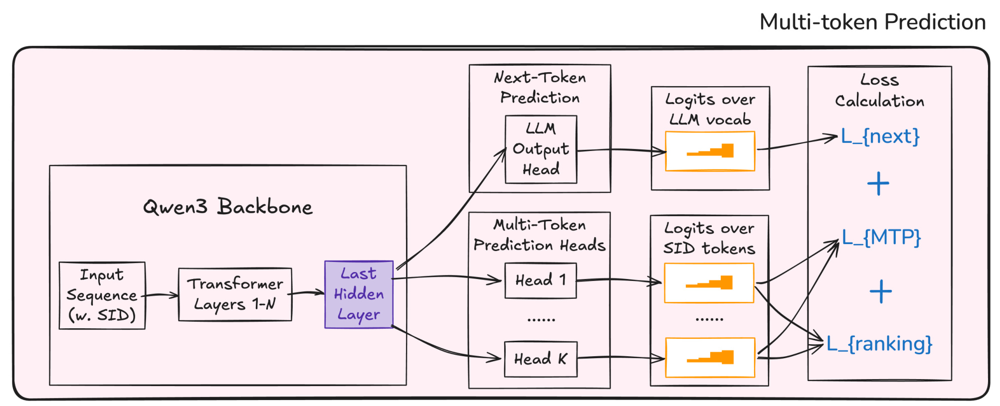
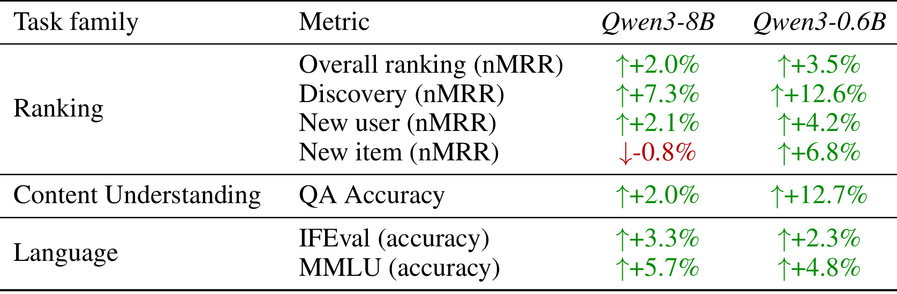
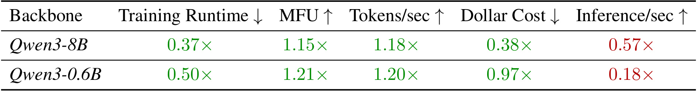
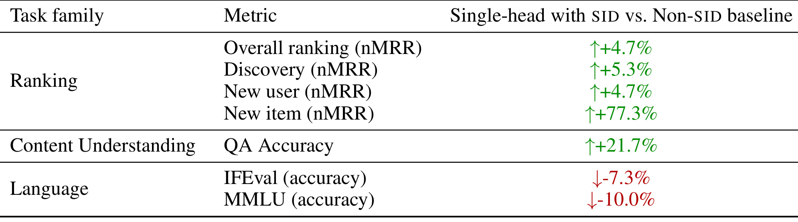
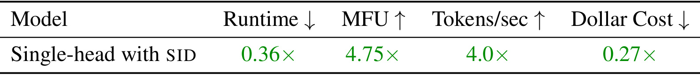
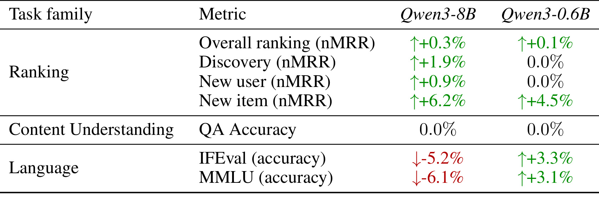
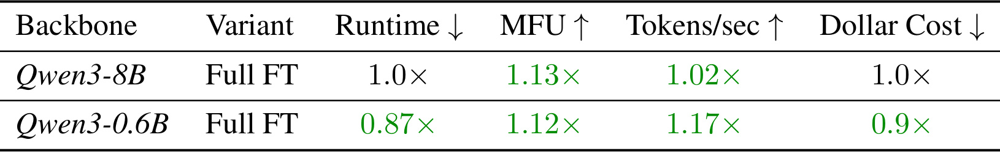
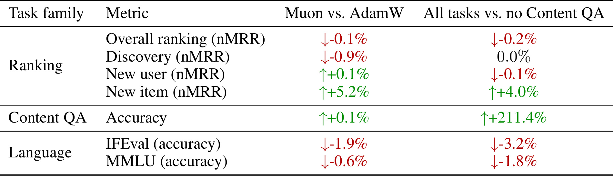

Netflix-SIDComparison：语义ID推荐中，单头束搜索与并行多词预测如何取舍
- 论文：Personalized LLM Recommendation with Semantic IDs: Autoregressive Beam Search vs. Multi-Token Prediction
- 作者：Sejoon Oh、Fernando Amat Gil、Evan Smothers、Dan Iter、Mark Thornburg、Dawit Mureja Argaw、Sourabh Medapati、Thea Wang、Ria Verma、Qiuling Xu、Harshit Syal、Ehsan Gholami、Moumita Bhattacharya、Ashish Rastogi
- 机构：Netflix Personalization Foundations Team
- 发布时间：2026年10月11日19:33 UTC，北京时间10月12日03:33；阅读日期：2026年10月15日
- 论文入口：arXiv:2610.15864
- 发表状态：PDF注明NeurIPS 2026 PALM Workshop，即个性化、对齐与长期记忆工作坊；不能据此认定为NeurIPS主会论文。
- 代码与项目：本轮未核验到独立公开代码或项目入口。以下数字均来自原文，未独立复现实验；工业数据和成本只公布相对结果。
1. 背景和问题
一个指令微调模型可以统一检索、内容理解和语言任务，并仅凭内容为全新影片生成推荐；关键问题是模型应当如何生成语义ID。
这句话忠实压缩自论文摘要中的研究问题。Netflix关心的是一个流媒体目录上的统一个性化模型：输入会员的交互历史和当前上下文，模型既需要找到适合观看的影片，也需要回答影片相关问题，还要保留一般的指令遵循能力。推荐并非孤立的目录分类任务，内容问答也不只是外围展示。若模型能够理解影片题材、剧情与相关元信息，理论上可以向缺少行为记录的新影片迁移，同时让推荐结果和自然语言解释使用一致的实体表征。因此作者把检索、内容问答与语言三种任务共同放入微调与评估，而不是只在一个下一物品预测数据集上比较命中率。
传统推荐系统常给每个物品分配独立编号，模型学习与编号相对应的向量或目录级分类输出。这个表示可以充分利用行为信号，却难以在新影片没有任何观看记录时获得可信的偏好分数。新编号本身没有语义，与旧影片之间也不存在由编号显式提供的共享关系。语义ID改变了输出空间：先把影片内容编码为连续向量，再通过残差量化得到由多个离散码构成的短序列。早期码描述较粗的内容类别，后续码逐步细化。两部内容相似的影片可以共享前缀，推荐模型就有机会把已经学会的前缀偏好分配给新影片。这里的“机会”依赖内容编码器、量化器以及训练中实际曝光的语义区域，并非无条件保证冷启动有效。
将语义ID词元放进通用语言模型的词表，还可以让检索输出不再依靠一个大小随目录增长的辅助排名头。原来的工业基线是LoRA适配加目录级排名头，后者用于输出全目录logits，既占用内存，也增加训练负担。新系统输出短码序列，把推荐和自然语言任务接到语言模型结构上。这个变化同时涉及表示、训练目标、推理搜索和系统实现，必须区分“语义ID整体配方是否胜过旧系统”和“已经使用语义ID时，哪种生成范式更好”两个问题。论文的主要对照回答后一问题，另外一组端到端结果才回答前者。
对于语义ID生成，最直接的方式是使用语言模型已有的单头逐词预测。当前层码依赖用户上下文和先前已生成的层码；束搜索保留多个前缀，避免早期只选一个码而过早淘汰正确路径。其代价是生成每一层都要继续执行解码，束宽又决定保留多少候选路径。多词预测则让多个输出头共享查询最后一个隐藏状态，分别预测不同层码，一次前向便能获得全部码分布。这样节约了解码轮数，而且容易为目录中的每一个实体计算分数，但默认各层输出在给定隐藏状态时相互独立，可能把各自看似合理、组合起来却不合适的码拼在一起。
过去一些生成式推荐工作把并行预测当作效率与质量的共同改进，常见证据来自专门的检索模型、较小的公开数据集或很长的语义ID。本文选择了不同场景：使用Qwen3通用骨干，语义ID只有四层，同时训练大规模私有检索、内容问答和指令数据。在四层条件下，自回归解码的额外步数相对有限，层间依赖可能更有价值；若语义ID长到几十层，这个账就可能重新计算。因此本文是在明确的短ID、多任务、工业成本环境中检验并行预测，而不是宣布所有多词预测都无效。作者还给并行基线增加联合物品排名损失，使它不至于因为缺少排名监督而成为过弱的对手。
还应区分本文的并行预测与推测式解码。后者可用多个草稿头提出候选，再由自回归模型校验，目标是保持原来的输出分布同时加速；本文的MTP直接使用独立头组成物品分数，生成分布本身就不同。前者可以进一步叠加到单头推荐上，后者才是当前实验要比较的生成范式。把两者混为一谈，会错误地从本文推断“不能用多头做加速”。相同地，论文提及其他公司的线上收益只是相关工作背景，不能当成Netflix这组实验的线上验证。
阅读时最有价值的观察点，是模型选择如何随着任务与成本口径变化：冷启动提升是否来自语义ID表示而非解码头；MTP的吞吐优势是否能抵消训练费用与排序损失；内容问答是否真的促进推荐，还是仅在同一骨干上并存；词表扩展又是否损伤通用语言能力。只有把这些链条分别拆开，才能把这份工业比较转化为可复用的研究设计。后文也会保留原文表格与正文表述不一致的地方，尤其是八十亿参数模型的新物品指标例外，避免把“多数指标占优”改写成“全部指标占优”。
2. 方法
2.1 语义ID生成：四层内容码与扩展词表
设目录为 $\mathcal E$，内容编码器给影片 $e$ 产生向量 $\phi(e)$，残差量化器按层产生离散码。原文公式（1）是：
符号解释：每个 $K_\ell$ 是该层码本大小，$L$ 是码长。量化器首先选取粗粒度内容簇，再用后续码表示剩余信息，因此语义相近影片往往拥有相同的前几层码。本文实验统一使用四层、每层一千零二十四个码的形状，合计向语言模型词表新增四千零九十六个SID词元。码长与新增词元数不能混淆：每个影片输出四个码，但所有层的可能码都需要有词表表示。作者说明金字塔式码本也可以使用，但没有提供这些形状的充分消融，因此对照结论首先绑定当前四层设置。
这个模块的输入是影片内容向量，输出是固定量化器快照下的SID，随后训练与推理都使用同一表示。新影片可以从内容直接计算SID，再加入目录前缀树；如果它共享已有语义前缀，模型无需先为它学习一个全新的原子编号。不过，当一条SID在训练中从未曝光、属于极端冷启动区域时，作者明确使用检索增强提示或轻量的每日微调兜底。“内容决定ID”解除的是实体编号必须先获得行为训练的依赖，未解除语言模型对陌生语义码的学习需求。新增实体可编码和新增实体能高质量推荐仍是不同阶段。 碰撞同样不能略去。不同影片可能量化到同一组码，文中说碰撞较少，例如不超过百分之一，处理办法是返回该SID桶中的第一个实体。由此一个SID并不严格等同唯一物品，这个简化策略会让桶中其他影片难以被单独检索。若迁移到物品数更多、长尾更多的商品目录，需要测量碰撞的频率与业务分布，不能只看平均比例。本文没有展开更精细的碰撞排序器，也没有把码本形状和碰撞解决共同做为受控变量；这些都是未来可影响质量与吞吐边界的表示选择。
2.2 单头与多头的训练目标
全部样本都写成扩展词表上的序列：检索样本把目标影片表示成SID词元，内容问答同时用影片文本与SID指代实体，一般指令样本保持原有文本形式。单头的训练仍然是标准下一词预测，但把文本位置集合 $T_{\mathrm{text}}$ 与SID位置集合 $T_{\mathrm{sid}}$ 分开加权。原文公式（2）为：
$\lambda$ 用于增加相对稀疏的SID目标对训练的贡献，避免大量文本位置淹没推荐监督。训练通过真实先前码预测当前码，形成层间条件关系；推理时先前码则由模型生成，需要用搜索处理前缀不确定性。这里共享头的优势不仅是少几个参数，还在于所有目标沿同一自回归预测规则优化；但它也意味着新增SID词元会参与原有语言词表的竞争，不能期待推荐适配绝不影响语言能力。论文只说单独SID权重对排名有显著帮助，没有公开足够具体的权重扫描结果，因此不能据此指定一个通用最佳取值。
MTP保留文本的下一词头，再在查询 $x$ 的共享隐藏状态 $h_x$ 上增加 $L$ 个SID头 $g_\ell$。第 $\ell$ 个头预测该层码，不接收此前其他头选出的码。原文公式（3）将正物品 $e^+$ 的逐层监督写作：
每个头可以各自学会高概率的码，却未必保证某个完整物品胜过其他物品。例如用户历史支持两个相近内容簇，每层边际概率都分散，四层独立组合可能给另一个实体较高分数。问题并不是独立头完全没有共享信息，它们都访问同一个用户表示；问题是一个头的输出选择不能作为另一个头的显式条件。作者以物品级联合分数补强这一训练弱点，原文公式（4）定义：
联合分数相当于各层概率乘积的对数。然后从当前请求有资格进入候选的目录中抽取批内或困难负样本 $\mathcal N(x)$，让正物品的联合分数胜过这些负物品。原文公式（5）包含排名损失与总损失：
$\alpha$ 和 $\beta$ 决定码预测与排名监督的权重，$\mathcal L_{\mathrm{next}}$ 保留文本任务的下一词学习。正物品和负物品不再只是某个码分类的正负标签，而是完整实体之间的竞争，因而损失可以对多个码头共同施加校准压力。这增强的是独立头组合后的排序能力，并未把它变成自回归条件分解。排名损失也引入额外候选打分与训练成本；目录较小，例如不超过一百万时，文中指出可以不采样而使用完整softmax，但这个阈值是文中场景提示，实际开销仍取决于设备和批量。

Figure 1左侧以含SID的输入序列进入Qwen3骨干，最后隐藏层分出两类路径。上方通向普通语言模型头，输出原有语言词表上的logits，并承担文本下一词损失；下方分出多个SID预测头，每个头负责一个码位置，产生该层候选码分布。图中画成Head 1到Head K的示意，并不意味着实验SID长度是任意K；实际实验使用四层，正文用L表示层数。右侧先由每层输出计算码级交叉熵，再把同一候选物品对应的所有码概率组合，计算新增物品级排名损失。箭头的含义是两种监督作用于同一组码头，而非先预测一层再把结果送给下一层。 这幅结构图让单头与MTP之间的差异更具体：两者都依靠同一骨干理解会员历史和内容，MTP另外保留文本头，所以本文并未用一个只能做检索的多头模型对照全功能语言模型。真正改变的是SID如何产生、怎样受监督以及怎样执行候选选择。新增排名损失试图缩小“每层码都预测对”与“整件物品排在前面”之间的差距，所有头通过总损失共享骨干梯度，但前向阶段仍不会看到其他头已选中的离散码。因此如果MTP改善了码级分类，却仍输在发现新内容的排名上，不能仅凭每层准确率判断推荐系统已改进；物品级任务指标才能回答联合分数是否有效。图中三类损失同时存在，也解释了为何单次推理更快不必然意味着训练更便宜：训练还要保留多组头和联合负样本竞争。
2.3 受约束、目录感知的束搜索与并行打分
单头检索从前缀逐步扩展下一层码，但允许输出空间不是整个语言词表，也不是某一层码本中的全部码。设 $\mathcal T$ 是实际目录SID组成的前缀树，$\mathcal C_x$ 是请求 $x$ 下符合资格的实体集合。原文公式（6）把下一词可用集合写成：
符号 $\succ$ 表示SID具有相应前缀。第一个条件消除不存在于目录的路径，第二个条件进一步保证这个路径至少延伸到一个对当前请求合格的实体。实现时在每一步应用logit掩码，模型还未把概率用在不合法路径上便排除它们，避免事后过滤把有限候选名额浪费掉。目录感知约束只保证输出合法与可用，并不自动保证偏好最优；过滤规则质量、目录更新以及束宽都影响最终结果。它也区别于只用静态前缀树限制语法的解码，因为相同前缀在不同请求中可能允许不同后续实体。
束搜索每层保留最高分的若干部分路径，完整SID的分数按照原文公式（7）取长度归一化对数概率：
当前所有SID长度都相同，除以 $L$ 不改变完整实体间的排序；公式的关键是每项显式依赖前缀，而非归一化本身。每层保留多个前缀，可以让后续细化码的分数重新排列早先候选，缓解贪心选择的不可逆错误。不过，被束搜索剪去的前缀不会凭空回来，因此不能把原文“修正早期错误”的解释理解为穷举整个目录。模型最后返回若干实体，是近似搜索得到的稀疏结果。相比MTP能够计算全目录每个物品的分数，二者在候选覆盖和密集打分需求上并不完全对等。 MTP一次前向获取所有层的分布，然后使用公式（4）给合法候选实体打分，在请求可用目录中选取最高分实体。它省去了逐层模型解码，却仍需对候选SID的码概率做聚合，目录增大时这个步骤并非零成本。原文特别保留MTP用于要求全目录密集分数、每个影片都具有非零概率的业务，而单头束搜索难以负担这种全目录概率生成。这是系统选型的重要边界：如果下游排序或探索必须消费完整候选评分，仅以束搜索返回少数物品的吞吐与质量对比，不能覆盖全部接口需求。
2.4 高效训练与推理栈
训练侧将四个已有技术整合在一起。Muon对矩阵梯度更新做正交化处理，主要保存动量，相比AdamW的状态可以节省内存；动态序列打包通过块对角掩码避免样本之间交叉污染，减少填充浪费；跨数据并行rank的批次混合让不同任务在一个全局批次内共同训练，改善吞吐与稳定性；Cut Cross-Entropy使用融合实现，避免显式生成庞大的全词表logits张量；HSDP在节点内切分状态、节点之间复制，让主要通信集中于高带宽的节点内链路。这里列举的通信、优化器与损失计算改变的是执行效率，不是另创一组推荐语义目标。
推理侧使用vLLM承载单头束搜索，借助前缀缓存在不同束和解码步之间复用较长会员历史的KV缓存。会员输入长而目标SID短，反复为每条束重新计算整段历史会把搜索开销放大；缓存使共享历史只需复用，在短ID条件下能让更宽的搜索变得负担得起。前缀树与请求目录约束接入每步的logit掩码。文中提到HSDP在8B骨干上带来约七个百分点的绝对MFU收益，但没有把所有系统组件逐个做完整可公开的独立收益拆分。本文贡献是组合、集成和测量，不应把已有内核、并行策略或优化器改名成新的算法发明。 这些技术对两组实验的含义不同。单头与MTP主对照都使用强化后的训练体系，目的是比较生成范式；新SID完整配方对旧非SID系统的对照则同时改变了训练栈，因此其大幅训练费用下降属于整个工程改造。训练省钱可以支持更多消融或更频繁更新，但无法单凭费用倍率证明内容表征的因果价值。对实际推荐系统迁移，训练、目录更新、长历史缓存和候选接口需要联合测量；哪一项最省资源、哪一项提升新物品质量，必须由各自受控实验回答。
3. 实验结果
3.1 数据、评价与保密口径
本文使用私有流媒体目录，每项训练任务至少采样一千万条样本，检索样本来自固定日期小时快照的会员交互，内容问答来自内部丰富元数据，一般指令数据混合公开指令语料。骨干主要是Qwen3-8B，并使用Qwen3-0.6B作为补充规模；模型以监督微调和LoRA适配为主，语言指标增强另外使用后续强化学习。训练和推理使用最多二百五十六块H200及A100-80GB GPU。原文没有公开目录规模、完整数据量、绝对费用、绝对任务分数，也未给出充分的置信区间，因此结果适合比较内部实验方向，不能还原一个公开可复现的吞吐预算。
检索以归一化平均倒数排名为指标，公式（8）为：
$\operatorname{rank}_x$ 是第一个相关实体在结果中的位置，分母按每个查询符合资格的相关物品情况进行归一化。作者用内部测试集预测未来一至七天的交互，并对七个偏移取平均，额外报告发现新内容、新用户、新物品切片。新用户是交互次数较少的用户，新物品是训练截止后上线的影片；具体阈值与绝对基数未公开。表格中的百分数都是相对变化，不是nMRR、IFEval或MMLU的百分点增加；它们也无法与另一论文的命中率、NDCG绝对值横向相减。
内容问答训练数据由前沿教师模型根据内部影片文本和SID上下文合成，例如文中举GPT 5.2，覆盖影片描述、SID语义、类似会员提问和两影片比较四种题型。训练时随机采样系统提示，百分之二十概率使用空系统消息，意图减轻固定提示风格依赖。评估则由Qwen2.5-32B-Instruct充当语言模型裁判，对分层测试集评分。教师与裁判是不同模型，合成问答和判断正确性也不是独立的人类事实标签。这种设计可以大规模测量内部内容一致性，但仍可能受到教师措辞、问题分布和裁判偏好的影响。语言任务只报告IFEval与MMLU，尚不足以覆盖多样实际提示中的通用能力。
3.2 单头和MTP的质量与成本
主对照保持骨干、SID分词器、数据混合与每词元训练预算一致，对比单头自回归目标加受约束束搜索，和带新增联合排名损失的MTP。作者把MTP设置成强化版本，使质量差异不只是“有无物品级监督”的结果。下面原表以单头相对MTP的变化为基准，正数表示单头更好。

Table 1中，8B单头的整体nMRR提升百分之二，发现新内容提升百分之七点三，新用户提升百分之二点一，内容问答提升百分之二；IFEval与MMLU分别提升百分之三点三和五点七。唯一负向排名项是新物品nMRR，单头相对MTP下降百分之零点八。0.6B则在全部列出的指标上占优，新物品提升百分之六点八，发现新内容提升百分之十二点六，问答提升百分之十二点七。由此能支持单头在大多数关键指标上更好，不能支持正文中“所有排名和问答指标都更好”的强表述，也不能把不同规模的小模型优势直接视作大模型规律。
八十亿参数新物品例外尤其重要，因为它与“语义ID冷启动提升百分之七十七”的标题性结果容易混读。前者比较的是两种已经使用SID的生成方式，后者比较完整SID新系统与非SID旧基线。新系统整体可以大幅改善冷启动，同时在新系统内部比较时MTP略高于单头；两者不矛盾。由于本文未报告误差条或重复种子的分布，百分之零点八差异是否稳健也不能自行确定。合理的系统结论是继续保留这一切片，在上线选择中观察其权重，而不是用平均排名的正向结果抹去它。

Table 2的8B行显示单头训练时间是MTP的零点三七倍，美元成本是零点三八倍，对应约二点七倍训练加速和二点六倍成本优势；MFU和训练每秒词元数分别为一点一五倍、一点一八倍。单头推理吞吐是MTP的零点五七倍，倒数换算MTP约一点七五倍，即约高百分之七十五。0.6B行则是训练时间零点五零倍、成本零点九七倍、推理吞吐零点一八倍，MTP吞吐约为单头五点五六倍。小模型费用只减少约百分之三，因此“单头训练便宜二点六倍”严格对应8B，不能套用所有规模。
运行时间与美元费用不是同一个口径。不同设备、资源安排和并行方式可能使它们不按相同比例变化，本文未公开完整细目，不能替作者补齐成本原因。MTP只需一次获取所有层分布，单头要逐步解码，这是推理吞吐差异的合理结构解释；但吞吐没有同时说明尾延迟、束宽变化、请求批量和候选目录成本。论文说Netflix部署选择默认单头，并为密集全目录评分保留MTP，这说明产品效用权衡，不等于给出了可验证的线上A/B收益。
作者认为与长SID研究不同的原因有两点：本实验只有四层，重复解码尚可接受，而各层依赖仍然重要；多任务共享表示可能更有利于单头。第一点与计算结构直接对应，第二点是作者解释，但需要任务混合与生成方式的交互消融才能确认因果。当前主对照仍把训练目标与推理过程成套改变，单头是条件生成加束搜索，MTP是独立头加目录打分，所以不能将全部收益单独归因到训练条件依赖或单独归因到搜索。该比较是两种可部署方案之间的配方对照，公平性较强，但并不意味着每个环节已被逐个分离。
3.3 完整SID配方对旧系统的收益和代价
第二组实验使用Qwen3-8B，把单头、原生SID及新的训练推理栈同旧非SID辅助排名头基线比较。相对基线改变很多，适合回答整体升级是否值得，不适合单独测量语义ID表示的净效应。

Table 3显示整体nMRR提升百分之四点七，发现新内容提升百分之五点三，新用户提升百分之四点七，新物品提升百分之七十七点三，内容问答准确率提升百分之二十一点七。与之同时发生的是IFEval下降百分之七点三、MMLU下降百分之十。作者把语言回退主要解释为SID词表扩展和共训扰动了原有指令分布，并在监督微调后做语言强化学习，报告IFEval相对提升百分之十二点八。表中没有足够细节证明所有语言项都恢复到原始水平，更不能从IFEval恢复推断MMLU或全部通用能力无损。
冷启动变化明显高于整体排名，是内容码前缀共享值得关注的经验信号，却仍需要基准绝对值判断其业务意义。当旧基线新物品表现很低时，相对提升可以很大；论文没有公开绝对值，不能把它写成新物品准确率增加七十七个百分点。训练数据混合、头结构以及新系统实现同时变动，内容问答收益也可能来自更一致的实体表示和训练过程。SID对低行为实体的帮助有明确机理，但这张表缺少只替换SID而固定其余组件的对照，因果强度应小于整体配方效果的强度。

Table 4以旧非SID基线为一，完整配方训练时间降至零点三六倍，约二点八倍加速；MFU变为四点七五倍，训练每秒词元数为四倍，费用降至零点二七倍，即节省百分之七十三。这个倍率不同于Table 2对MTP的零点三八倍费用，基线不能互换。旧系统未包含当前训练优化，新的打包、损失内核、优化器与分片通信和移除目录级头共同参与，不能把百分之七十三成本下降称为SID编码单项贡献。相对MFU的大幅提升也不能误写成绝对MFU达到四百七十五个百分点。
这里的实际价值是能在同样预算下进行更多模型试验和更频繁的数据刷新，而不是承诺同样硬件迁移后必然节省相同比例。历史长短、词表大小、目录级头的旧实现以及原基线是否已经打包都会改变节约空间。若现有系统本来就拥有高效损失计算和高利用率的并行训练，复制这组完整倍率的可能性会降低。对一个已经使用SID的推荐团队，Table 1和Table 2通常比端到端表更直接；对仍采用目录级辅助头的团队，后两表更像一个值得拆分验证的整体升级方向。
3.4 适配方式、优化器与任务协同的消融
LoRA与全参数微调在单头设置下进行比较，结果揭示了质量偏好和运行效率之间的分离。原文选择LoRA作为默认，依据主要是排名特别是新物品质量，而不是认为少量可训练参数天然更快。

Table 5显示8B的LoRA整体nMRR相对全参提升百分之零点三，发现新内容提升百分之一点九，新用户提升百分之零点九，新物品提升百分之六点二，问答无变化；语言方面IFEval下降百分之五点二、MMLU下降百分之六点一。0.6B的LoRA整体提升百分之零点一，发现和新用户无变化，新物品提升百分之四点五，问答仍无变化，语言两项反而分别提升百分之三点三和三点一。作者指出8B给输出层也应用LoRA，而0.6B未这样做，这使规模和适配位置同时变化，不能把语言方向相反仅归因于参数规模。
输出层直接作用于扩展词表的预测，在这里适配位置会影响语言与SID任务的竞争。消融结果提醒我们把“冻结多少参数”进一步细化为“改了哪些矩阵”，尤其要独立测量输出头适配。本文未给出足够的同规模输出层开关表，因而作者对语言差异的解释有合理性，但还不是完整的独立验证。排名增幅较小的切片也需要种子方差才能判断是否有稳定优势，不能在没有误差条时称为显著提升。

Table 6的基准换成同骨干LoRA。8B全参时间和费用均为一倍，MFU一点一三倍、每秒词元一点零二倍；0.6B全参时间零点八七倍、MFU一点一二倍、每秒词元一点一七倍、费用零点九倍。全参在所列系统项上相当或更好，作者解释为标准稠密矩阵计算免去LoRA的额外内核启动和较低算术强度。减少可训练参数会节省部分状态与梯度，却不能直接替代真实端到端性能测量。表格没有宣布全参质量全面更好，也没有公开一个可推广到所有设备配置的规律。
优化器和内容问答数据的消融分别回答“是否值得换Muon”和“多任务内容训练能否帮助排名”。应分别读取两列各自的基准，而不是把所有正负数视作一种实验。

Table 7左列中，Muon相对AdamW的整体、发现、新用户nMRR分别为负百分之零点一、负百分之零点九、正百分之零点一，新物品提升百分之五点二，QA只提升百分之零点一，语言略降。右列比较全部任务与移除内容问答：整体负百分之零点二、发现不变、新用户负百分之零点一、新物品正百分之四，但QA提升百分之二百一十一点四，语言下降。总体排序几乎不变，不能声称内容问答共训带来明显的平均排名协同；QA巨幅变化则说明去掉其专门训练后，该能力会明显损失。
Muon的主要选择理由还包括文中描述的更低状态内存、更大可用批量以及约百分之二十的MFU和吞吐改善，而不是Table 7中普遍更好的任务质量。对于内容问答，作者承认当前仅监督微调的配方没有观察到明显协同，提出未来先用继续预训练注入内容，再做以排名为主的监督微调。这是未来方向，本文没有完成继续预训练加监督微调的受控对照，不能把它作为已证实的解决方案。QA相对提升百分之二百一十一点四也不是准确率超过百分之百，而是分母不同后产生的相对变化。
此外，论文文字指出SID权重和MTP辅助排名损失能提高排名，但没有给出完整数表；码本层数、扇入扇出形状、任务混合比例被明确留作未来研究。因而方法主张有结构和经验依据，最重要的交叉边界仍未测清：当SID变长、目录变大或任务切换为纯检索时，单头何时输给MTP。本文九页主文加两页参考文献，没有线上A/B结果、公开案例表或附录提供的额外误差分析；所能确认的是离线质量与测得系统成本，尚不能断言实际会员观看或满意度会按同样幅度变化。
4. 总结
这篇论文的贡献首先是一份严肃的工业比较：在统一多任务LLM、短四层语义ID和大规模私有流媒体数据中，作者强化MTP排名监督后，单头束搜索仍在多数质量指标和8B训练成本上有优势。新增物品级损失直接对完整SID进行竞争，比逐码监督更接近排序目标；但它无法消除并行头没有显式前缀条件的结构差异。系统实现又显示训练成本与推理吞吐必须分别核算，单次前向更少的方案并不一定训练费用更低。
对推荐研究最可迁移的思路，是用内容量化生成新实体表征，在推理中把真实目录和请求资格融入每步搜索，再用统一任务接口测量内容与语言能力的副作用。对已有多头检索模型，物品级联合分数与负样本排名监督值得受控测试；对短SID单头方案，可以先检查长会员历史缓存与搜索实现，避免在没有测清瓶颈时直接换生成范式。以上是基于本文机制的研究启发，不能替代目标业务上的数据实验。
需要保留四组局限。第一，目录、数据、绝对分数和费用均为私有信息，缺少公开复现与误差分布，离线结果没有明确线上A/B支撑。第二，主对照同时比较训练分解与推理搜索，端到端对照又叠加系统栈变化，无法把所有收益单独归因到SID或自回归依赖。第三，四层码长、碰撞取首实体、极端冷启动兜底共同限制结论外推，更长ID和更大目录可能改变优劣。第四，内容问答来自合成数据并由模型裁判评估，语言回退只展示部分恢复信息；当前任务与提示格式也可能引起过拟合。这些局限分别涉及可验证性、因果、表示范围和评价范围，不能用一个“未来需要更多实验”笼统代替。
8B新物品切片中单头相对MTP下降百分之零点八，0.6B单头成本只到零点九七倍；完整SID配方的百分之七十七点三冷启动提升，也不是SID单项因果收益。这三个边界应当随核心结果一起引用。另一个值得记住的负结果是内容问答训练保住了QA能力，却没有明显改善平均排名。统一模型实现了功能共享，任务之间仍未必产生用户偏好的正向迁移，先内容后排名的阶段式训练还只是待验证方案。
后续至少有三项具体工作。其一，在固定骨干、目录资格和候选覆盖下扫描码长与束宽，同时报告新物品切片、尾延迟和训练总费用，寻找单头与MTP的实际交叉点。其二，固定其余训练组件，独立对照SID表示、联合排名损失以及输出层LoRA，拆开整体升级中的质量与语言影响。其三，验证继续预训练、监督微调和语言强化学习的阶段组合，配合人类核验内容QA与真实线上业务指标，观察恢复语言能力是否又影响推荐。可额外记录量化碰撞和极端新SID的兜底比例，判断内容冷启动的覆盖面是否足够。
本文让一个常见直觉变得更精确：并行预测能够减少解码轮数，但推荐的最终选择还受到码间依赖、候选接口、训练账单与能力保持约束。最有用的阅读结论是带着这些约束做方案选择，并把正向结果、例外切片和缺失证据同时纳入实验设计。